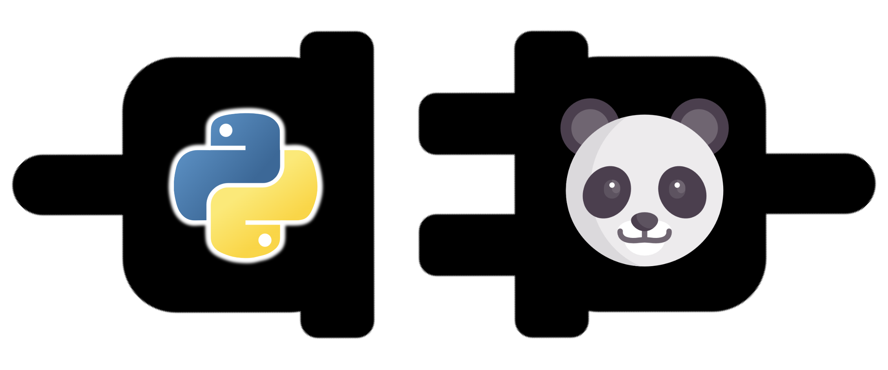
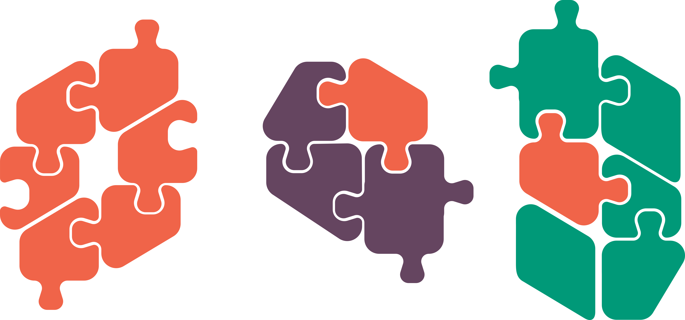

import math
print('pi is', math.pi)
print('cos(pi) is', math.cos(math.pi))pi is 3.141592653589793
cos(pi) is -1.0
Most of the power of python is in its libraries.
A library contains functionality above and beyond those available as built-ins.
A library’s functionality needs to be brought into Python’s working memory using the import keyword. Components can then be accessed using the . notation.
pi is 3.141592653589793
cos(pi) is -1.0Individual modules or functions can be imported, allowing direct access:
Another option is to ‘alias’ a module when importing; this allows us to make programs more succint without loosing clarity.
A final way of importing from libraries that you may come across is the star import:
--------------------------------------------------------------------------- NameError Traceback (most recent call last) Cell In[4], line 1 ----> 1 print(type(scatterplot)) NameError: name 'scatterplot' is not defined
| Image processing |
|---|
| openCV2 |
| napari |
| scikit-image |
| Machine learning |
|---|
| pytorch |
| keras |
| tensorflow |
Libraries can be found and installed from the Python Package Index (PyPI) using package managers like pip or conda via the terminal.
virtualenv or conda.
%pip install that allows you to install packages directly from a notebook, rather than through the terminal.
1.4 Importing common libraries
1.5 Installing additional libraries
We can also write our own functions! Custom functions encapsulate repetitive tasks into reusable blocks of code, break down complex problems into smaller manageable pieces, and make code cleaner and more modular.
